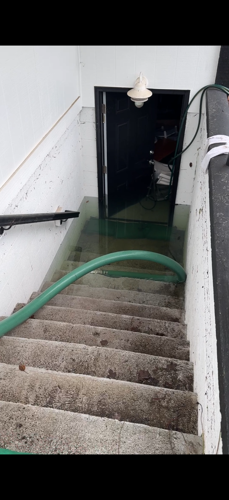
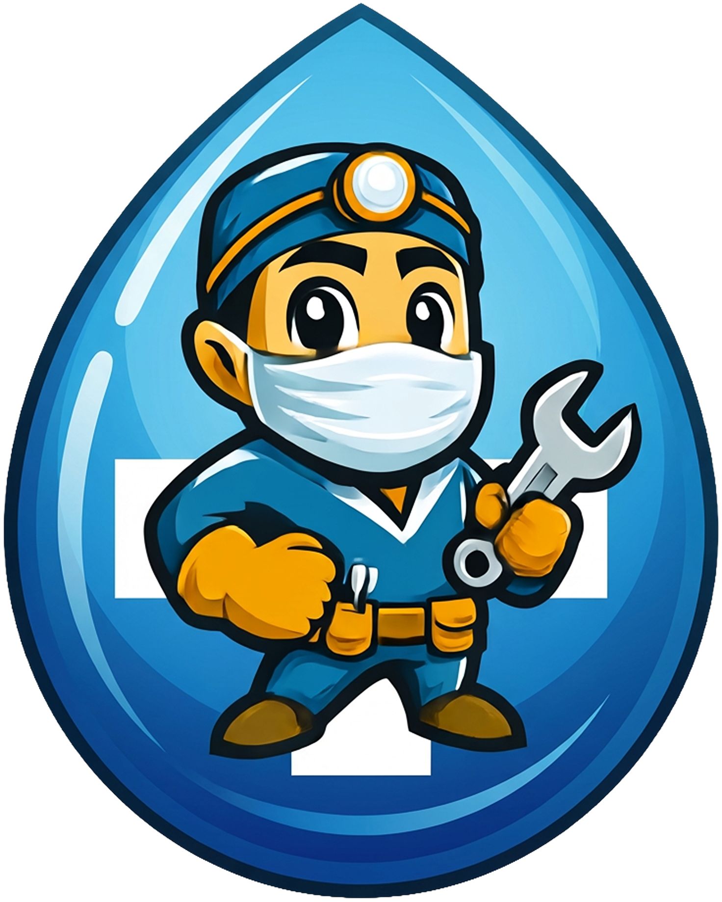
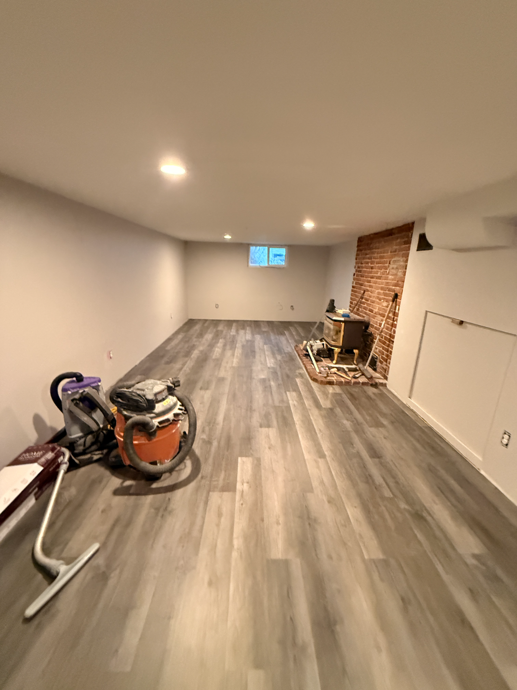
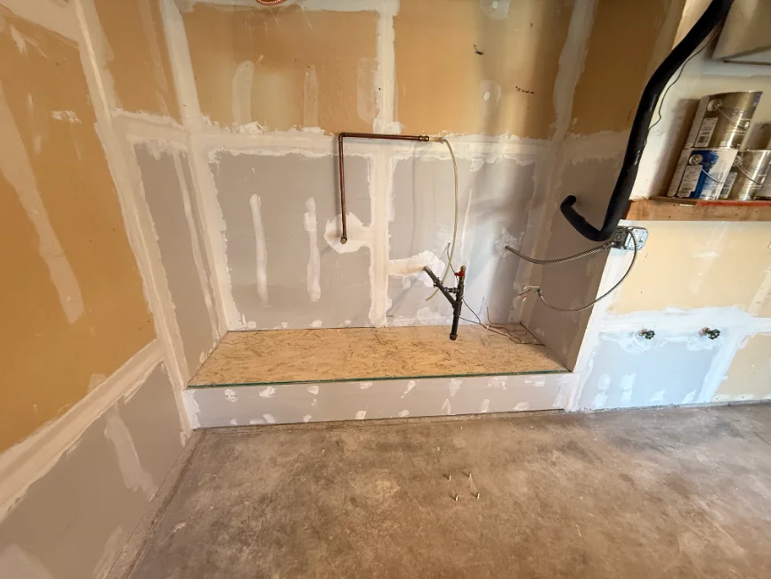
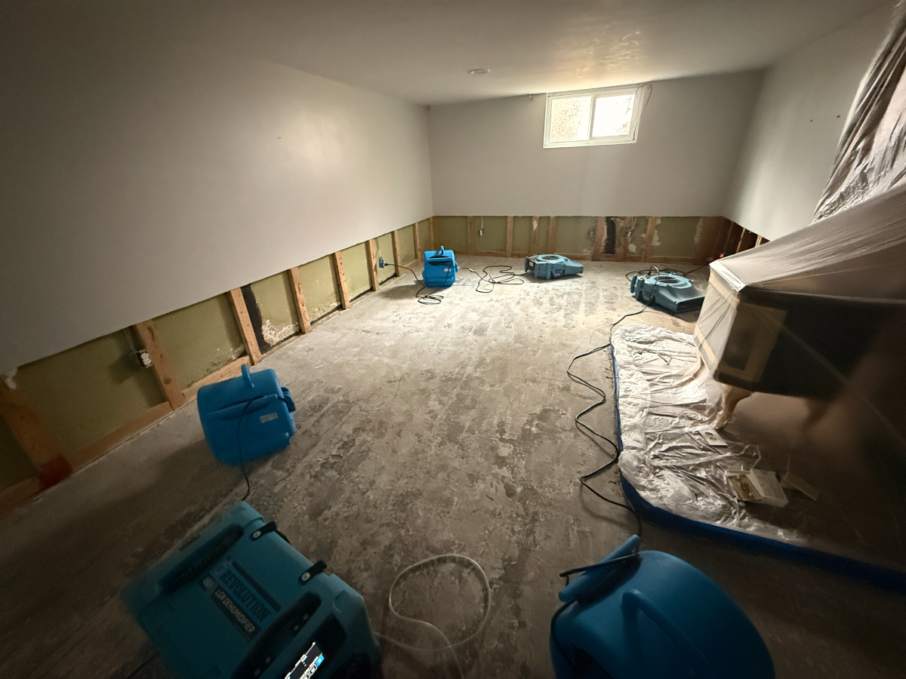
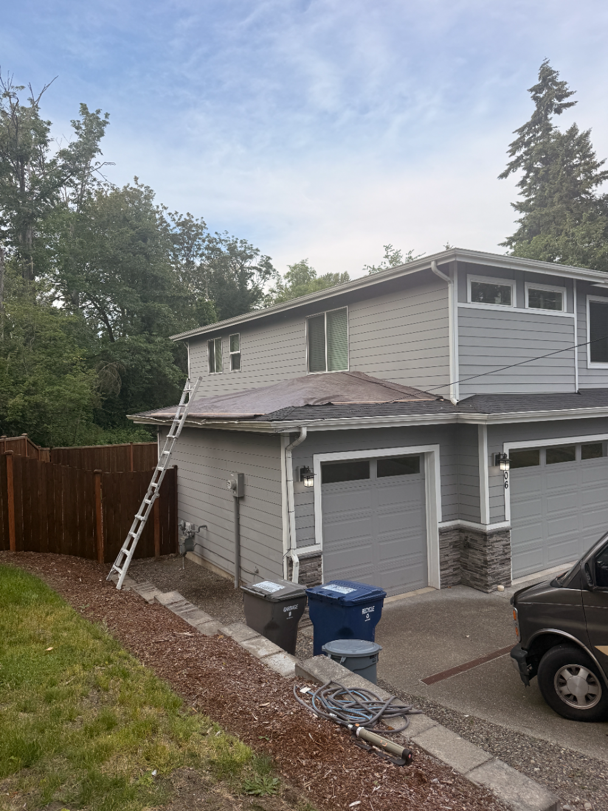

Emergency · 24/7
Water Damage Restoration
24/7 emergency extraction, structural drying, and mold prevention — on-site in about an hour.
Learn more
Restoration Medix
When mitigation is done, the same crew puts your property back together — framing, drywall, flooring, paint, and finish carpentry. One licensed general contractor, start to finish.
Plenty of companies will dry your home out and then leave. You're handed a moisture report and a problem: now find a contractor, get bids, wait weeks, and hope the rebuild matches what your insurance approved. That gap between mitigation and reconstruction is where most homeowners lose time and money.
Restoration Medix closes that gap. Because we're a licensed general contractor — not just a mitigation company — the crew that dried your home is the crew that rebuilds it. Framing, subfloor, drywall, flooring, trim, cabinetry, and paint, all under one roof and one point of accountability.
We work directly from your insurance scope so the reconstruction is covered and accurate, pull the right permits, and handle inspections. When we're done, the only sign anything happened is that the space looks new.

We work directly from your insurance scope so the reconstruction is covered, accurate, and done right the first time.
We assess the structural damage, document it, and build a line-item estimate that matches your insurance scope.
We remove unsalvageable materials and rebuild the structure — framing, subfloor, and rough-in coordination.
Hang, tape, texture, and paint, plus flooring, trim, and cabinetry to bring the space back to pre-loss condition.
We walk the finished work with you, clear every punch-list item, and close out the claim with your carrier.

Whatever the loss took out, we rebuild — and because we handled the mitigation, nothing falls through the cracks between contractors.
We're a full general contractor, so the same team carries your property from the first emergency through the final coat of paint.

24/7 emergency extraction, structural drying, and mold prevention — on-site in about an hour.
Learn moreKitchens, baths, basements, and whole-home renovations built by a licensed general contractor.
Learn more
Emergency tarping, leak repair, and full replacement — plus the interior damage the leak caused.
Learn moreEvery hour of standing water means more damage and more mold. Call and a crew is on the way.
Call (206) 557-6444From the Green River Valley to the Eastside and down through Pierce County, our crews cover South King County & Pierce County, WA. Tap your city for local details.
"At a time when we felt vulnerable and lost, we felt grateful to have a no-drama, friction-free experience. Luis and his team finished within three weeks, patient explaining everything, and worked around our three pets without a fuss."
"In a situation where a lot of things can go wrong, Restoration Medix made the process smooth and straightforward. Extremely thorough, communicated clearly, and made sure every step aligned with what insurance required."
"Great price — we were really pleased with the quality of work and scheduling flexibility. Absolutely will recommend to friends and family."
Free estimates · 24/7 emergency dispatch · insurance-friendly. We're standing by.